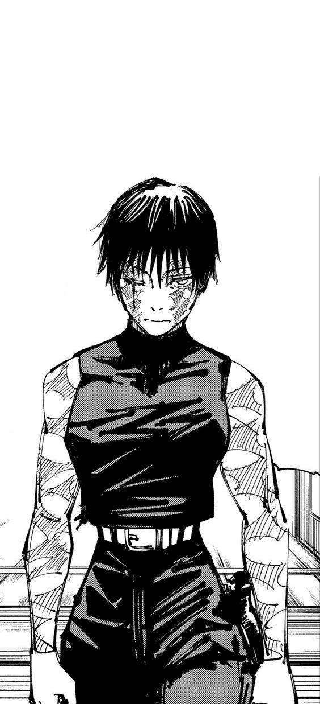
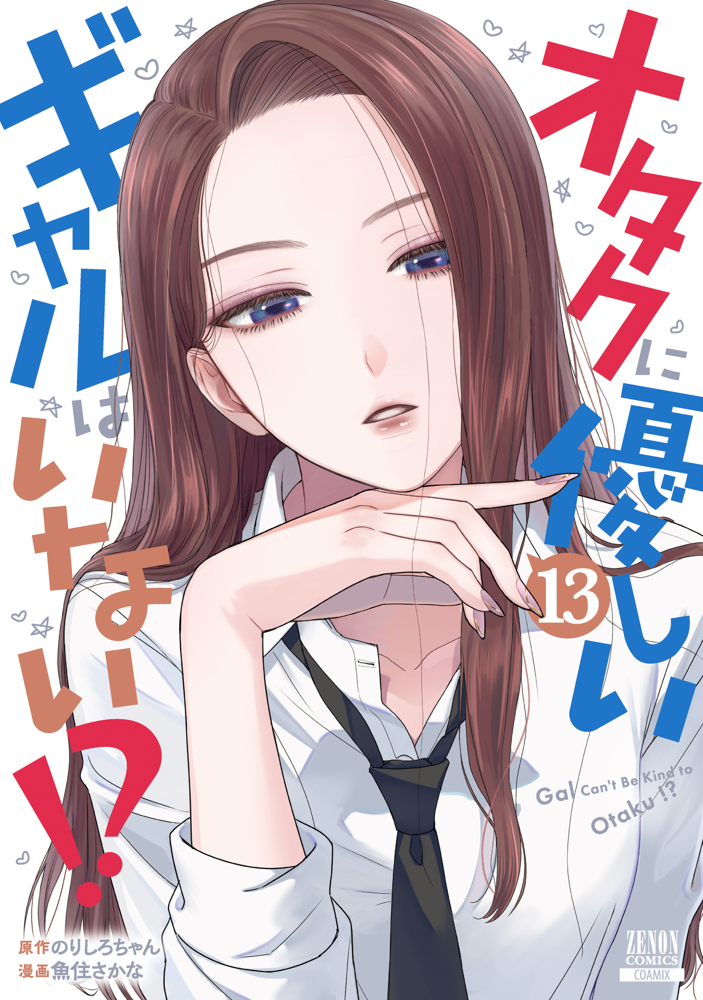

¿Alguien más emocionad@ por el nuevo arco de Sono Bisque?
¡El último capítulo me dejó sin palabras! Marin está increíble con su nuevo cosplay...

Una comedia romántica sobre dos estudiantes que se reencuentran en la preparatoria. Las cosas se complican cuando ella no quiere admitir sus verdaderos sentimientos. ¡Su vida escolar está a punto de volverse un caos!
Leer ahora
Narumi, una oficinista que oculta su estilo de vida fujoshi, y Hirotaka, un apuesto y capaz hombre de compañía que es un otaku de los videojuegos. Ambos parecen perfectos el uno para el otro, pero el amor es difícil para los otakus.
Leer ahoraWakana Gojo es un estudiante de secundaria que sueña con convertirse en un maestro artesano de muñecas Hina. Su vida cambia cuando Marin Kitagawa, la chica más popular de su clase, descubre su talento y le pide ayuda para hacer cosplay.
Leer ahoraExplora los capítulos recién subidos por la comunidad.

Aquí aparecen los mangas que estás siguiendo. ¡No te pierdas ninguna actualización!
Discute los últimos capítulos y comparte recomendaciones con otros lectores.
¡El último capítulo me dejó sin palabras! Marin está increíble con su nuevo cosplay...
Estoy buscando más historias de romance entre adultos en el trabajo. ¿Alguna sugerencia?